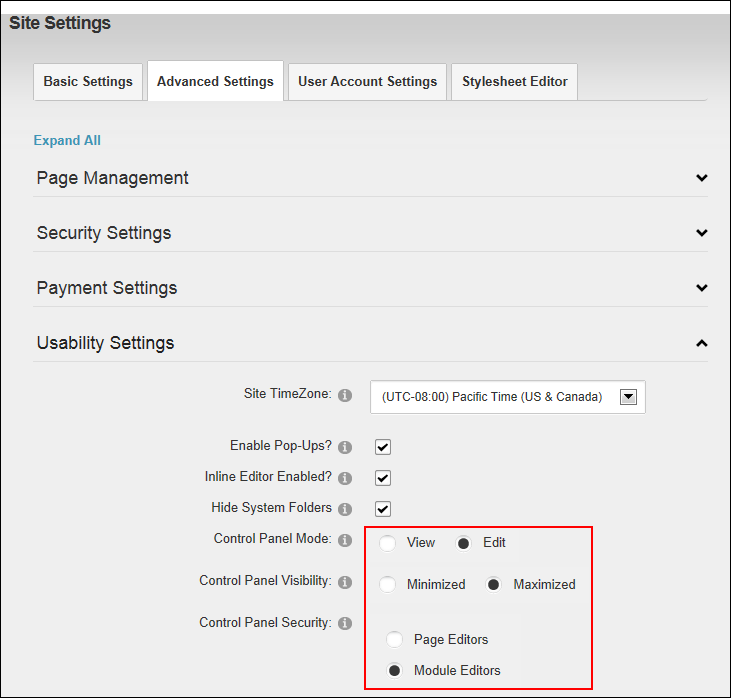

Configuring the Control Panel Options
How to configure the default settings for the Control Panel. Whenever an authorized user interacts with the Control Panel the mode and visibility last selected by that user will be applied the next time.
- Navigate to Admin >
 Site Settings.
Site Settings.
- Select the Advanced Settings tab.
- Expand the Usability Settings section.
- At Control Panel Mode, select either View or Edit as the default mode for the Control Panel.
- At Control Panel Visibility, select either Minimized or Maximized as the default view for the Iconbar ControlBar only. This setting is not relevant to either the ControlBar or the RibbonBar Control Panels.
- At Control Panel Security, select from the following options to set which groups of site editors can view the Control Panel.
- Page Editors: Select to display the Control Panel to Page Editors only. A Page Editor is any user that is authorized to create and manage pages and page settings.
- Module Editors: Select to display the Control Panel to both Page Editors and Module Editors. A Module Editor is any user that is authorized to edit and/or manage content on one or module modules. Choosing this option will allow these users to view the site in either View or Edit mode.

-
Click the Update button.
Related Topics:
-
See "Overview of the ControlBar Control Panel"
-
See "Overview of the RibbonBar Control Panel"